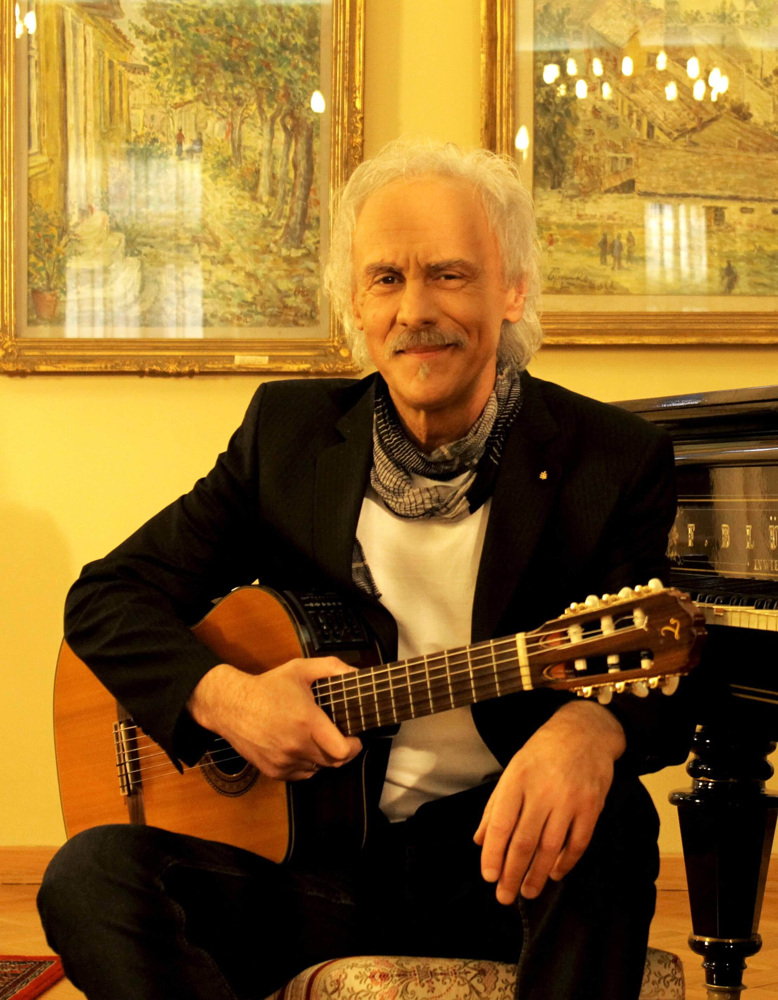
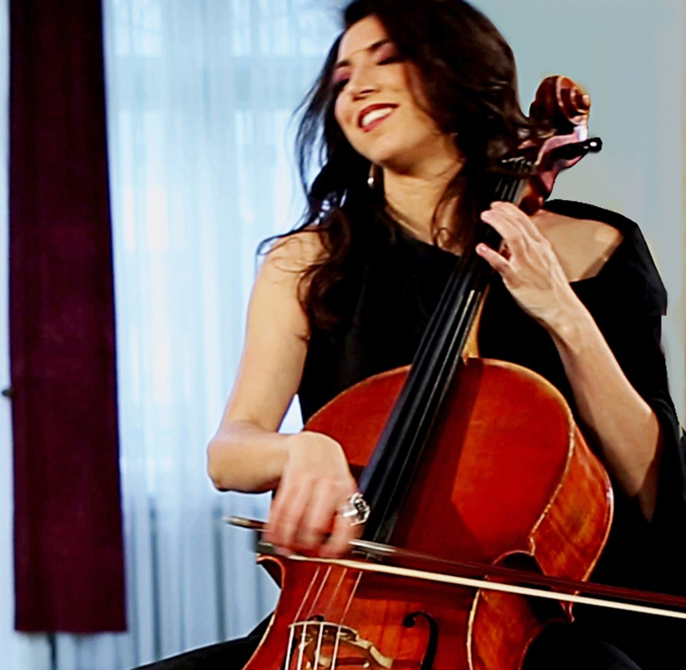

News
About us
Osnovna muzička ideja, koju neguje duo Moderato, je zasnovana na stilizaciji
i obradama etno pesama Srbije i šireg prostora Balkana. Pored ovih pesama u programu
su zastupljene i autorske kompozicije, inspirisane našim umetničkim nasleđem.
Do sada su objavljena četiri albuma. Prvi „Milkano“ drugi „Igra za dvoje“,
treći „Intima“ i četvrti ,,P.S. post scriptum“ za nacionalnu izdavačku kuću PGP – RTS.
Kao gosti učestvuje vokalna grupa ,,Konstantin“ iz Niša. Na koncertima i nastupima pridružuje se
i Bojan Čukić Jazz pijanista iz Bora, Dragoljub Firulović – Firul pevač i artista iz Negotina.
Tokom svog muzičko-scenskog rada ostvarili su značajnu umetničku saradnju sa našim
poznatim umetnicima: Oliver Njego, Rade Šerbeđžija, Branislav Lečić, Slobodan Trkulja,
Miki Manojlović, Ljubiša Stojanović-Louis, Željko Samarđžić, hor Srbadija iz Bijeljine.
Ucestvovali su u poznatoj TV seriji ,,Stizu dolari,, i bili gosti u emisijama kod
Mire Adanje – Polak i Timofejev. Muzika ovog dua se nasla u serijalu ,,Brevijar,, i ,,Putevi humanizma,, Kuhinja moga kraja.
Od koncerata i nastupa u zemlji i inostranstvu izdvajaju se - ,,Mokranjčevi dani,, u Negotinu, ,,Guarnerius,, - centar lepih umetnosti Jovana Kolundžije,
Zvezdara teatar, koncert u ambasadi Kanade, koncert u Kopenhagenu, koncert za nas konzulat u Švedskoj – Malme i Helsinborg, koncert u Nikoziji - Kipar.
Nastup u ambasadi Rumunije, koncert u Tirani. Nastupili su u Beogradskoj Areni ispred grupe VaYa Con Dios. Održali samostalne koncerte u Narodnom pozorištu
i Sava centru u Beogradu. Nastupali na Jazz festivalu - Nisville 2018 g.

Milan Ignjatović je član Udruženja likovnih umetnika Srbije ULUS i do sada je izlagao
na brojnim kolektivnim i individualnim izložbama u svojoj zemlji, kao i u
inostranstvu. U poslednje vreme sve je više zaokupljen digitalnom umetnošću i grafikom.
Za svoju kolekciju digitalnih slika osvojio je prvu nagradu na festivalu ,,Art Tech“ u Pančevu, 2002. godine, dok je 2004. godine
osvojio ,,Prolećnu nagradu“ društva likovnih i primenjenih umetnika galerije Stara Kapetanija iz Zemuna. Na polju pedagogije, pored dugogodišnjeg rada u školi,
osnivač je DELIS-a, dečijeg festivala likovnih umetnosti u Zemunu.
Predsedava Aktivom likovnih pedagoga Zemuna. Slikar, nastavnik umetnosti i kompozitor, živi i radi u Zemunu (Beograd). Pored rada u školi i slikanja, muzikom se bavi i kao kompozitor i kao gitarista.

Mima Vrbanić je diplomirala na Fakultetu muzičkih umetnosti u Beogradu, odsek violončelo. Članica je orkestra opere Narodnog pozorišta u Beogradu. Povremeno sarađuje sa orkestrom Gorana Bregovica i Zdravka Čolica.
Discography